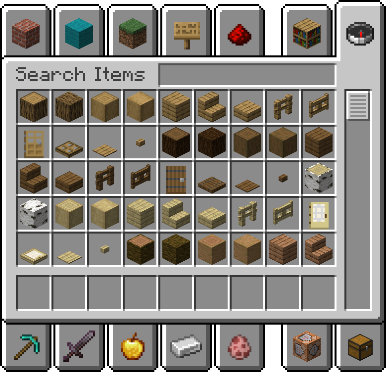

Modo Creativo de Minecraft
Descripción del Modo
El modo creativo permite a los jugadores construir y explorar sin límites, con acceso infinito a todos los recursos y bloques del juego.
Características Principales
- Construcción Ilimitada: Todos los bloques disponibles sin restricciones
- Vuelo Libre: Posibilidad de volar por todo el mundo
- Sin Daño: Jugadores inmunes a cualquier tipo de daño
- Inventario Completo: Acceso a todos los objetos del juego
Ventajas del Modo Creativo
- Construcción de estructuras masivas y complejas
- Experimentación sin consecuencias
- Prueba de diseños y arquitecturas
- Máxima libertad de creación

Libera tu creatividad sin límites en el mundo de Minecraft.